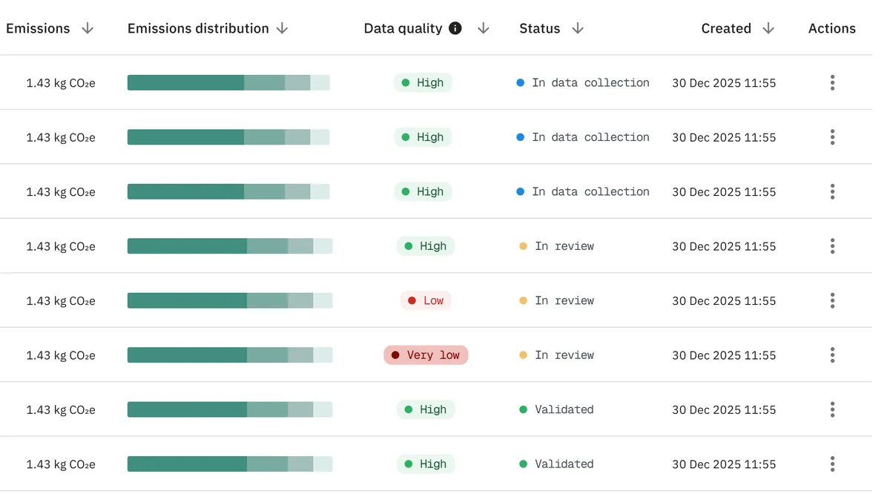
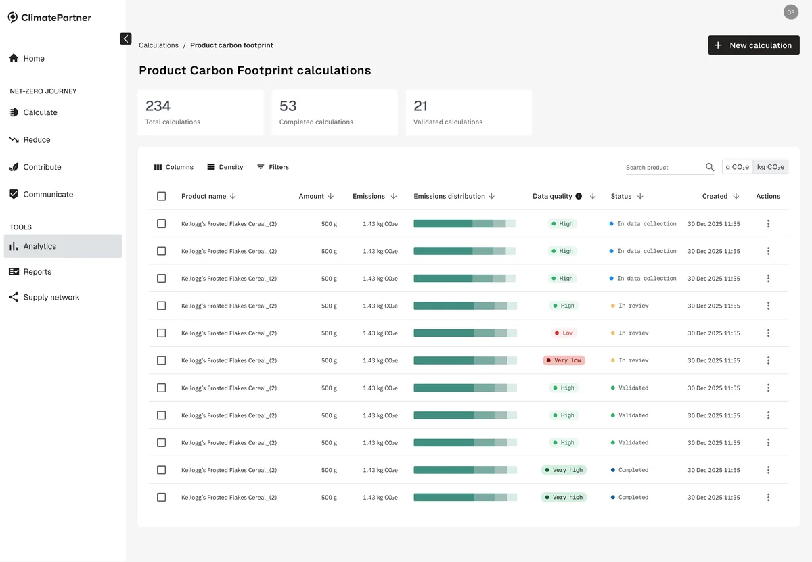
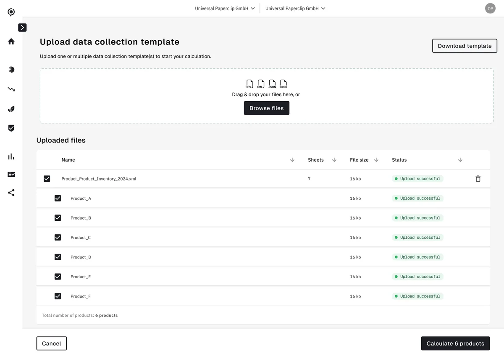
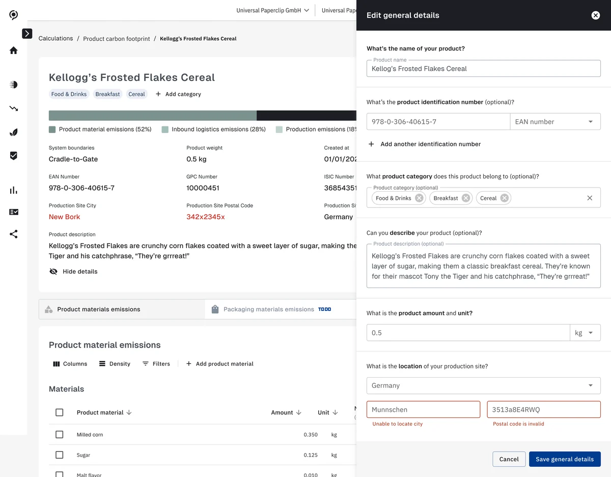
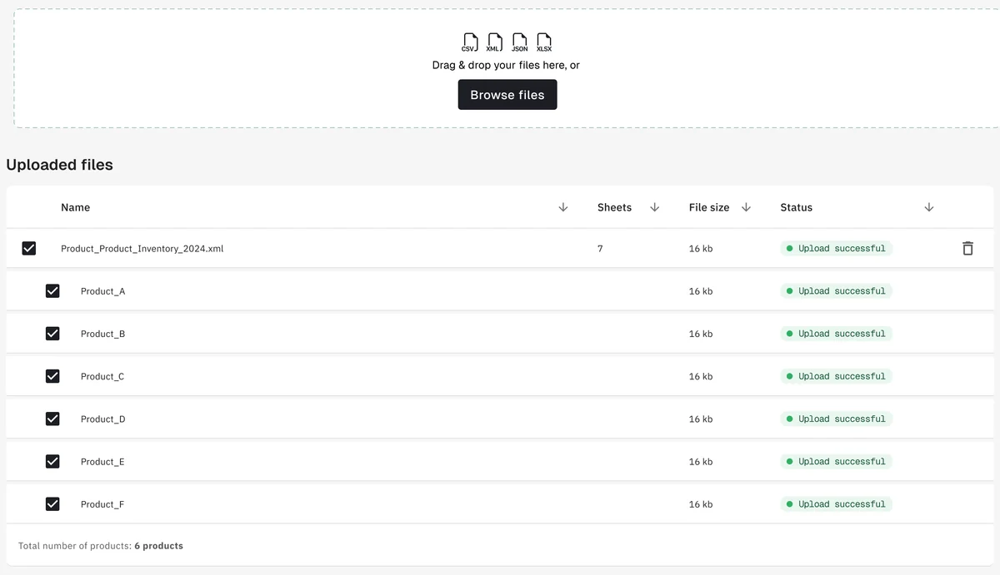
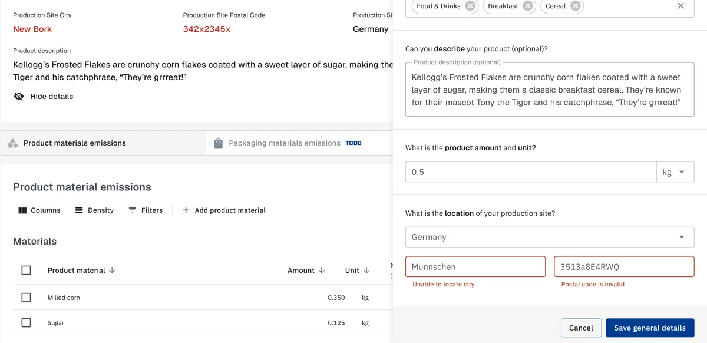

1/3
Every footprint says how sure it is
A calculation carries a data quality rating, from very low to very high, in the list and for every material inside it. No number stands without a word on how solid its data is.

Work/4/5/Case study




ClimatePartner helps companies calculate, reduce and communicate their emissions. The Product Carbon Footprint is a new product on that platform: it works out the emissions of one product from cradle to gate, across its materials, packaging, production and inbound logistics.
We cut the time a Product Carbon Footprint calculation takes from weeks to minutes.
As Staff Product Designer I led its design end to end: user research, concept, prototyping, testing and iteration, working closely with product managers and developers.
Decisions
1/3
A calculation carries a data quality rating, from very low to very high, in the list and for every material inside it. No number stands without a word on how solid its data is.

2/3
A data collection template can hold several products. It goes in as CSV, XML, JSON or XLSX, the products it contains are listed and ticked, and they are calculated together.

3/3
A product’s details are edited in a panel beside its calculation. A city that cannot be located or a postal code that is not valid is flagged in the form, and marked in red on the page behind it.

The products and figures on these screens are sample data.
Next / 5/5 Affinidi